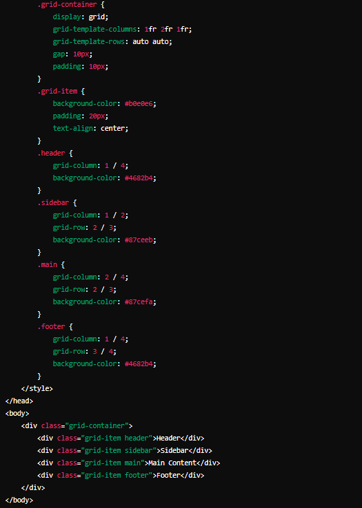
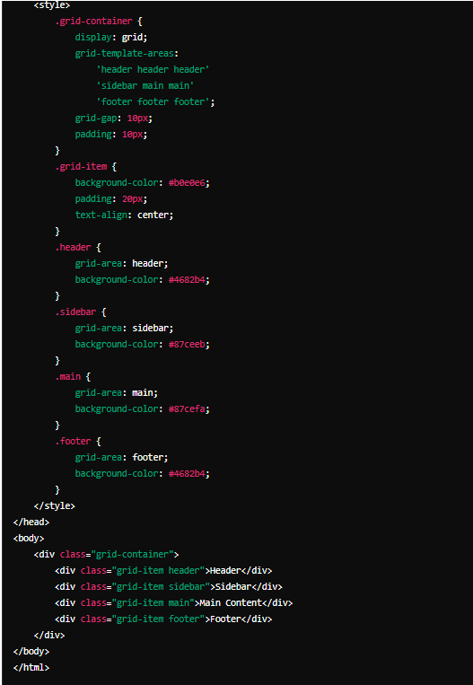
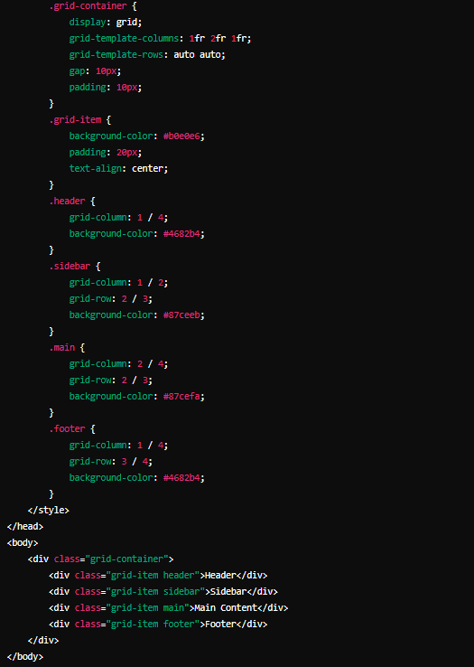
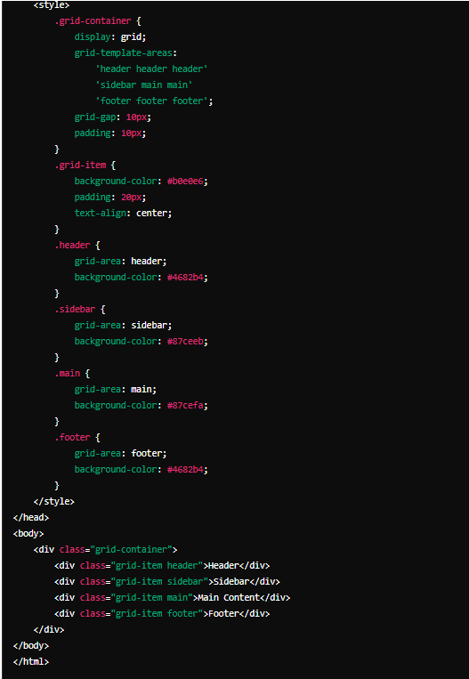

|
align-content
|
Especifica la alineación predeterminada de los elementos dentro del contenedor flexible cuando dichos elementos ocupan más de una linea.
|
flexbox align-content: flex-start | flex-end | center | space-between | space-around | stretch;
grid align-content: start | end | center | space-between | space-around | stretch | space-evenly
|
|
align-items | Especifica la alineación predeterminada de los elementos dentro del contenedor flexible cuando dichos elementos ocupan una sola linea.
|
flexbox align-items: flex-start | flex-end | center | baseline | stretch;
grid align-items: start | end | center | baseline | stretch;
|
|
align-self | Especifica la alineación de los elementos seleccionados dentro del contenedor flexible.
|
flexbox align-self: flex-start | flex-end | center | baseline | stretch;
grid align-self: start | end | center | stretch
|
|
all
|
Establece el valor de todas las propiedades del elemento seleccionado.
|
initial | inherit | unset
|
|
animation
|
Especifica las animaciones basadas en keyframes.
|
nombre duración retardo número-de-iteraciones dirección estado-de-la-animación
|
|
animation-delay
|
Define el número de segundos (s) o milisegundos (ms) a esperar antes de que comience la animación
|
time | initial | inherit;
|
|
animation-direction
|
Define si una animación debe reproducirse hacia adelante, hacia atrás o en ciclos alternos
|
normal | reverse | alternate | alternate-reverse | initial | inherit; |
| animation-duration | Especifica cuánto tiempo debe tomar una animación para completar un ciclo. | time | initial | inherit; |
| animation-fill-mode | Especifica un estilo para el elemento cuando la animación no se está reproduciendo. | none | forwards | backwards | both | initial | inherit; |
| animation-iteration-count | Indica el número de veces que se debe reproducir una animación. | number | infinite | initial | inherit; |
| animation-name | Especifica un nombre para la animación @keyframes. | nombrekeyframe | none | initial | inherit; |
| animation-play-state | Esta propiedad indica si la animación está en ejecución o en pausa. | paused | running | initial | inherit; |
| animation-timing-function | Especifica el TIEMPO que usa una animación para cambiar de un conjunto de estilos CSS a otro. | linear | ease | ease-in | ease-out | ease-in-out | step-start | step-end | steps(int,start|end) | cubic-bezier(n,n,n,n) | initial | inherit; |
| backface-visibility | Define si la cara posterior de un elemento debe ser visible o no cuando mira al usuario.
Esta propiedad es útil cuando se gira un elemento. Te permite elegir si el usuario debe ver la cara posterior o no. | visible | hidden | initial | inherit; |
| background | Es una propiedad abreviada para:
background-color
background-image
background-position
background-size
background-repeat
background-origin
background-clip
background-attachment | bg-color bg-image position/bg-size bg-repeat bg-origin bg-clip bg-attachment initial | inherit; |
| background-attachment | Establece si una imagen de fondo se desplaza con el resto de la página o si es fija. | scroll | fixed | local | initial | inherit; |
| background-blend-mode | Define el modo de fusión de cada capa de fondo (color y/o imagen). | normal | multiply | screen | overlay | darken | lighten | color-dodge | saturation | color | luminosity; |
| background-clip | Indica hasta dónde debe extenderse el fondo (color o imagen) dentro de un elemento. | border-box | padding-box | content-box | initial | inherit; |
| background-color | Establece el color de fondo de un elemento. | color | transparent | initial | inherit; |
| background-image | Establece una o más imágenes de fondo para un elemento. | url | none | initial | inherit; |
| background-origin | Especifica la posición de origen (el área de posicionamiento de fondo) de una imagen de fondo. | padding-box | border-box | content-box | initial | inherit; |
| background-position | Establece la posición inicial de una imagen de fondo. El primer valor es la posición horizontal y el segundo la posición vertical. | left top
left center
left bottom
right top
right center
right bottom
center top
center center
center bottom
etc. |
| background-repeat | Estable cómo o sí se repetirá una imagen de fondo. | repeat | repeat-x | repeat-y | no-repeat | initial | inherit; |
| background-size | Establece el tamaño de las imágenes de fondo. | auto | length | cover | contain | initial | inherit; |
| border | Es una abreviatura de las propiedades:
border-width
border-style (requerido)
border-color | border-width border-style border-color | initial | inherit; |
| border-bottom * | Es una abreviatura de las propiedades:
border-bottom-width
border-bottom-style
border-bottom-color | border-width border-style border-color | initial | inherit; |
| border-bottom-color * | Establece el color del borde inferior de un elemento. | color | transparent | initial | inherit; |
| border-bottom-left-radius * | Define el radio de la esquina inferior izquierda. | length | % [length|%] | initial | inherit; |
| border-bottom-right-radius * | Define el radio de la esquina inferior derecha. | length |% [length |%] | initial | inherit; |
| border-bottom-style * | Establece el estilo del borde inferior de un elemento | none | hidden | dotted | dashed | solid | double | groove | ridge | inset | outset | initial | inherit; |
| border-bottom-width * | Establece el ancho del borde inferior de un elemento. | medium | thin | thick | length | initial | inherit; |
| En las propiedades marcadas con un asterisco, bottom es sustituible por top, left y right. | top: Hace referencia al borde superior
left: Hace referencia al borde izquierdo
right: Hace referencia al borde derecho. | |
| border-collapse | Establece si los bordes de la tabla deben contraerse en un solo borde o estar separados como en HTML estándar | separate | collapse | initial | inherit; |
| border-color | Establece el color de los cuatro bordes de un elemento. Esta propiedad puede tener de uno a cuatro valores para especificar el color de los bordes superior, derecha, inferior e izquierda respectivamente. | color | transparent | initial | inherit; |
| border-image | Permite especificar una imagen para usarla como borde alrededor de un elemento | source slice width outset repeat | initial | inherit; |
| border-image-outset | Especifica la cantidad en la que el área de la imagen del borde se extiende más allá del cuadro del borde. | length | number | initial | inherit; |
| border-image-repeat | Especifica si la imagen del borde debe repetirse, redondearse, espaciarse o estirarse | stretch | repeat | round | space | initial | inherit; |
| border-image-slice | Especifica cómo dividir la imagen indicada por border-image-source. La imagen siempre se divide en nueve secciones: cuatro esquinas, cuatro bordes y el medio. | number | % | fill | initial | inherit; |
| border-image-source | Especifica la ruta a la imagen que se usará como borde (en lugar del borde normal alrededor de un elemento). | none | image | initial | inherit; |
| border-image-width | Establece el ancho de la imagen del borde. | number | % | auto | initial | inherit; |
| border-radius | Define el radio de las esquinas del borde del elemento. | length | % / 1-4 length | % | initial | inherit; |
| border-spacing | Establece la distancia entre los bordes de las celdas adyacentes. | length | initial | inherit; |
| border-style | Establece el estilo de los cuatro bordes de un elemento. Esta propiedad puede tener de uno a cuatro valores. | none | hidden | dotted | dashed | solid | double | groove | ridge | inset | outset | initial | inherit; |
| border-width | Establece el ancho de los cuatro bordes de un elemento. Esta propiedad puede tener de uno a cuatro valores | medium | thin | thick | length | initial | inherit; |
| bottom | Afecta a la posición vertical de un elemento posicionado. Esta propiedad no tiene efecto en elementos no posicionados. | auto | length | initial | inherit; |
| box-decoration-break | Especifica como se aplican las propiedades background, padding, border, border-image, box-shadow, margin, y clip-path de un elemento cuando la caja de un elemento está fragmentada. | slice | clone | initial | inherit | unset; |
| box-shadow | Adjunta una o más sombras a un elemento. | none | h-offset v-offset blur spread color | inset | initial | inherit; |
| box-sizing | Define cómo se calculan el ancho y el alto de un elemento: si deben incluir relleno y bordes, o no. | content-box | border-box | initial | inherit; |
| break-after | Especifica si se debe producir o no un salto de página, un salto de columna o un salto de región después del elemento especificado. | auto | all | always | avoid | avoid-column | avoid-page | avoid-region | column | left | page | recto | region | right | verso | initial | inherit; |
| break-before | Especifica si se debe producir o no un salto de página, un salto de columna o un salto de región antes del elemento especificado. | auto | all | always | avoid | avoid-column | avoid-page | avoid-region | column | left | page | recto | region | right | verso | initial | inherit; |
| break-inside | Especifica si se debe producir o no un salto de página, un salto de columna o un salto de región dentro del elemento especificado. | auto | all | always | avoid | avoid-column | avoid-page | avoid-region | column | left | page | recto | region | right | verso | initial | inherit; |
| caption-side | Especifica la ubicación de un título de tabla | top | bottom | initial | inherit; |
| caret-color | Especifica el color del cursor (signo de intercalación) en entradas, áreas de texto o cualquier elemento que sea editable. | auto | color | initial | inherit; |
| @charset | La regla @charset especifica la codificación de caracteres utilizada en la hoja de estilo. | @charset «charset»; |
| clear | Controla el flujo junto a los elementos flotantes. | none | left | right | both | initial | inherit; |
| clip | Permite especificar un rectángulo para recortar un elemento absolutamente posicionado. El rectángulo se especifica como cuatro coordenadas, todas desde la esquina superior izquierda del elemento que se va a recortar.
No funciona con «overflow: visible». | auto | shape | initial | inherit; |
| clip-path | Permite recortar un elemento a una forma básica o a una fuente SVG. | clip-source | basic-shape | margin-box | border-box | padding-box | content-box | fill-box | stroke-box | view-box | none | initial | inherit; |
| color | Establece el color del texto. | color | initial | inherit; |
| column-count | Especifica el número de columnas en las que se debe dividir un elemento. | number | auto | initial | inherit; |
| column-fill | Especifica cómo llenar columnas, equilibradas o no. | balance | auto | initial | inherit; |
| column-gap | Establece el espacio entre las columnas. | length | normal | initial | inherit; |
| column-rule | Establece el ancho, el estilo y el color de la regla entre columnas. | column-rule-width column-rule-style column-rule-color | initial | inherit; |
| column-rule-color | Especifica el color de la regla entre columnas. | color | initial | inherit; |
| column-rule-style | Indica el estilo de la regla entre columnas. | none | hidden | dotted | dashed | solid | double | groove | ridge | inset | outset | initial | inherit; |
| column-rule-width | Especifica el ancho de la regla entre columnas. | medium | thin | thick | length | initial | inherit; |
| column-span | Especifica cuántas columnas debe abarcar un elemento. | none | all | initial | inherit; |
| column-width | Establece el ancho de una columna. | auto | length | initial | inherit; |
| columns | Es una propiedad abreviada para:
column-width
column-count | auto | column-width column-count | initial | inherit; |
| content | Se utiliza con los pseudo-elementos ::before y ::after, para insertar contenido generado | normal | none | counter | attr | string | open-quote | close-quote | no-open-quote | no-close-quote | url | initial | inherit; |
| counter-increment | Aumenta o disminuye el valor de uno o más contadores CSS. | none | id | initial | inherit; |
| counter-reset | Crea o restablece uno o más contadores CSS.
Generalmente se usa junto con las propiedades counter-increment y content. | none | name number | initial | inherit; |
| cursor | Especifica el cursor del ratón que se mostrará cuando se apunte sobre un elemento. | cursor: valor; |
| direction | Especifica la dirección del texto o la dirección de escritura dentro de un elemento a nivel de bloque. Más información aquí. | ltr | rtl | initial | inherit; |
| display | Establece el comportamiento de visualización (el tipo de cuadro de representación) de un elemento. | inline | block | contents | flex | grid | inline-block | inline-flex | inline-table | list-item | run-in Más información aquí. |
| empty-cells |
Establece si mostrar o no los bordes en las celdas vacías de una tabla. | show | hide | initial | inherit; |
| filter | Define efectos visuales (como desenfoque y saturación) a un elemento (a menudo utilizado para imágenes). | none | blur() | brightness() | contrast() | drop-shadow() | grayscale() | hue-rotate() | invert() | opacity() | saturate() | sepia() | url(); |
| flex | Es una propiedad abreviada para:
flex-grow
flex-shrink
flex-basis
Establece la longitud flexible en elementos flexibles. | flex-grow flex-shrink flex-basis | auto | initial | inherit; |
| flex-basis | Especifica la longitud inicial de un elemento flexible. | number | auto | initial | inherit; |
| flex-direction | Esta propiedad indica la dirección de los elementos flexibles. | row | row-reverse | column | column-reverse | initial | inherit; |
| flex-flow | Es una abreviatura para las propiedades:
flex-direction
flex-wrap
Si los elementos no son elementos flexibles, la propiedad de flujo flexible no tiene efecto. | flex-direction flex-wrap | initial | inherit; |
| flex-grow | Especifica cuánto crecerá el elemento en relación con el resto de elementos flexibles dentro del mismo contenedor. | number | initial | inherit; |
| flex-shrink | Establece cómo se encogerá el elemento en relación con el resto de los elementos flexibles dentro del mismo contenedor. | number | initial | inherit; |
| flex-wrap | La propiedad especifica si los elementos flexibles deben ajustarse o no. | nowrap | wrap | wrap-reverse | initial | inherit; |
| float | Especifica si un elemento debe flotar a la izquierda, a la derecha o no flotar en absoluto.
Los elementos posicionados de manera absoluta ignoran la propiedad float. Los elementos junto a un elemento flotante fluirán a su alrededor. Para evitar esto, use la propiedad clear | none | left | right | initial | inherit; |
| font | Es una abreviatura para las propiedades:
font-style
font-variant
font-weight
font-size/line-height
font-family | font-style font-variant font-weight font-size/line-height font-family | caption | icon | menu | message-box | small-caption | status-bar | initial | inherit; |
| @font-face | Se deben definir un nombre para la fuente (por ejemplo, miFuente), y luego apuntar al archivo de fuente. | @font-face {
font-properties
} |
| font-family | Especifica la fuente de texto para un elemento. Es posible especificar varios nombres de fuente como un sistema «alternativo». Si el navegador no admite la primera fuente, prueba con la siguiente fuente. | family-name | generic-family | initial | inherit; |
| font-feature-settings | Permite el control sobre características tipográficas avanzadas en fuentes OpenType. | normal | feature-value; |
| font-kerning | Controla el uso de la información de interletraje almacenada en una fuente. | auto | normal | none; |
| font-size | Establece el tamaño de una fuente. | medium | xx-small | x-small | small | large | x-large | xx-large | smaller | larger | length | initial | inherit; |
| font-size-adjust | Le brinda un mejor control del tamaño de la fuente cuando la primera fuente seleccionada no está disponible. Cuando una fuente no está disponible, el navegador usa la segunda fuente especificada. Esto podría resultar en un gran cambio para el tamaño de fuente. Para evitar esto, utilice la propiedad font-size-adjust. | number | none | initial | inherit; |
| font-stretch | Le permite hacer que el texto sea más angosto (condensado) o más ancho (expandido). | ultra-condensed | extra-condensed | condensed | semi-condensed | normal | semi-expanded | expanded | extra-expanded | ultra-expanded | initial | inherit; |
| font-style | Especifica el estilo de fuente para un texto. | Normal | italic | oblique | initial | inherit; |
| font-variant | Especifica si un texto debe mostrarse o no en mayúsculas pequeñas. | normal | small-caps | initial | inherit; |
| font-variant-caps | Controla el uso de glifos alternativos para letras mayúsculas. | normal | small-caps | all-small-caps | petite-caps | all-petite-caps | unicase | titling-caps | initial | inherit | unset; |
| font-weight | Establece qué tan gruesos o delgados deben mostrarse los caracteres del texto. | normal | bold | bolder | lighter | number | initial | inherit; |
| gap | Define el tamaño del espacio entre las filas y las columnas. | row-gap column-gap; |
| grid | Es una abreviatura para las propiedades:
grid-template-rows
grid-template-columns
grid-template-areas
grid-auto-rows
grid-auto-columns
grid-auto-flow | none | grid-template-rows / grid-template-columns | grid-template-areas | grid-template-rows / [grid-auto-flow] grid-auto-columns | [grid-auto-flow] grid-auto-rows / grid-template-columns | initial | inherit; |
| grid-area | Especifica el tamaño y la ubicación de un elemento de cuadrícula en un diseño de cuadrícula y es una propiedad abreviada para las siguientes propiedades:
grid-row-start
grid-column-start
grid-row-end
grid-column-end | grid-row-start / grid-column-start / grid-row-end / grid-column-end | itemname; |
| grid-auto-columns | Establece un tamaño para las columnas en un contenedor grid. | auto | max-content | min-content | length; |
| grid-auto-flow | Controla cómo se insertan en la cuadrícula los elementos colocados automáticamente. | row | column | dense | row dense | column dense; |
| grid-auto-rows | Establece un tamaño para las filas en un contenedor de cuadrícula. | auto | max-content | min-content | length; |
| grid-column | Especifica el tamaño y la ubicación de un elemento de cuadrícula en un diseño de cuadrícula y es una propiedad abreviada para las siguientes propiedades:
grid-column-start
grid-column-end | grid-column-start / grid-column-end; |
| grid-column-end | Define cuántas columnas abarcará un elemento, o en qué línea de columna terminará el elemento. | auto | span n | column-line; |
| grid-column-gap | Define el tamaño del espacio entre las columnas en un diseño de cuadrícula. | grid-column-gap: length; |
| grid-column-start | Define en qué línea de columna comenzará el elemento. | auto | span n | column-line; |
| grid-gap | Define el tamaño del espacio entre las filas y las columnas en un diseño de cuadrícula y es una propiedad abreviada para las siguientes propiedades:
grid-row-gap
grid-column-gap | grid-row-gap grid-column-gap; |
| grid-row | Especifica el tamaño y la ubicación de un elemento de cuadrícula en un elemento grid y es una propiedad abreviada para las siguientes propiedades:
grid-row-start
grid-row-end | grid-row-start / grid-row-end; |
| grid-row-end | Define cuántas filas abarcará un elemento, o en qué línea de fila terminará el elemento | auto | row-line | span n; |
| grid-row-gap | Define el tamaño del espacio entre las filas en un diseño de cuadrícula. | grid-row-gap: length; |
| grid-row-start | Define en qué línea de fila comenzará el elemento. | grid-row-start: auto|row-line; |
| grid-template | Es una propiedad abreviada para las siguientes propiedades:
grid-template-rows
grid-template-columns
grid-template-areas | none | grid-template-rows / grid-template-columns | grid-template-areas | initial | inherit; |
| grid-template-areas | Especifica áreas dentro de un elemento grid. | none | itemnames; |
| grid-template-columns | Especifica el número (y el ancho) de las columnas en un diseño grid. | none | auto | max-content | min-content | length | initial | inherit; |
| grid-template-rows | Especifica el número (y las alturas) de las filas en un diseño de cuadrícula. | none | auto | max-content | min-content | length | initial | inherit; |
| hanging-punctuation | Especifica si se puede colocar un signo de puntuación fuera del cuadro de línea al principio o al final de una línea completa de texto. | none | first | last | allow-end | force-end | initial | inherit; |
| height | Establece la altura de un elemento. No incluye relleno, bordes o márgenes. | auto | length | initial | inherit; |
| hyphens | Define si se permite la separación silábica para crear más oportunidades de ajuste suave dentro de una línea de texto. | none | manual | auto | initial | inherit; |
| image-rendering | Especifica el tipo de algoritmo que se utilizará para escalar la imagen. | auto | smooth | high-quality | crisp-edges | pixelated | initial | inherit; |
| @import | Regla que le permite importar una hoja de estilo a otra hoja de estilo. | url | string list-of-mediaqueries; |
| isolation | Define si un elemento debe crear un nuevo contenido de apilamiento. | auto | isolate | initial | inherit; |
| justify-content | Alinea los elementos del contenedor flexible cuando los elementos no utilizan todo el espacio disponible en el eje principal (horizontalmente). | flex-start | flex-end | center | space-between | space-around | space-evenly | initial | inherit; |
| @keyframes | Regla que especifica el código de animación. | @keyframes name {keyframes-selector {css-styles;}} |
| left | Afecta la posición horizontal de un elemento posicionado. Esta propiedad no tiene efecto en elementos no posicionados. | auto | length | initial | inherit; |
| letter-spacing | Aumenta o disminuye el espacio entre caracteres en un texto. | normal | length | initial | inherit; |
| line-height | Especifica la altura de una línea. | normal | number | length | initial | inherit; |
| list-style | Es una abreviatura de las siguientes propiedades:
list-style-type
list-style-position
list-style-image | list-style-type list-style-position list-style-image | initial | inherit; |
| list-style-image | Reemplaza el marcador de elemento de lista con una imagen. | none | url | initial | inherit; |
| list-style-position | Especifica la posición de los marcadores de elementos de lista (viñetas). | inside | outside | initial | inherit; |
| list-style-type | Especifica el tipo de marcador de elemento de lista en una lista. | list-style-type: value; |
| margin | Establece los márgenes de un elemento y es una propiedad abreviada para las siguientes propiedades:
margin-top
margin-right
margin-bottom
margin-left | length | auto | initial | inherit; |
| margin-bottom | Establece el margen inferior de un elemento. | length | auto | initial | inherit; |
| margin-left | Establece el margen izquierdo de un elemento. | length | auto | initial | inherit; |
| margin-right | Establece el margen derecho de un elemento. | length | auto | initial | inherit; |
| margin-top | Establece el margen superior de un elemento. | length | auto | initial | inherit; |
| mask-image | Especifica una imagen que se utilizará como capa de máscara para un elemento. | none | image | url | initial | inherit; |
| mask-mode | Especifica si la imagen de la capa de máscara debe tratarse como una máscara de luminancia o como una máscara alfa. | match-source | luminance | alpha | initial | inherit; |
| mask-origin | Especifica la posición de origen (el área de posición de la máscara) de una imagen de capa de máscara. | border-box | content-box | padding-box | margin-box | fill-box | stroke-box | view-box | initial | inherit; |
| mask-position | Establece la posición inicial de una imagen de máscara (en relación con el área de posición de la máscara). | mask-position: value; |
| mask-repeat | Establece sí o cómo se repetirá una imagen de máscara. | repeat | repeat-x | repeat-y | space | round | no-repeat | initial | inherit; |
| mask-size | Especifica el tamaño de la imagen de la capa de máscara. | auto | size | contain | cover | initial | inherit; |
| max-height | Define la altura máxima de un elemento. | none | length | initial | inherit; |
| max-width | Define la anchura máxima de un elemento. | none | length | initial | inherit; |
| @media | La regla se usa para aplicar diferentes estilos para diferentes tipos de medios/dispositivos. | @media not | only type and (feature and | or | not mediafeature) {
CSS-Code;
} |
| min-height | Define la altura mínima de un elemento. | length | initial | inherit; |
| min-width | Define la anchura mínima de un elemento. | length | initial | inherit; |
| mix-blend-mode | Especifica cómo el contenido de un elemento debe combinarse con su fondo principal directo. | normal | multiply | screen | overlay | darken | lighten | color-dodge | color-burn | difference | exclusion | hue | saturation | color | luminosity; |
| object-fit | Se utiliza para especificar cómo se debe cambiar el tamaño de un <img> o <video> para que se ajuste a su contenedor. | fill | contain | cover | scale-down | none | initial | inherit; |
| object-position | Se usa junto con object-fit para especificar cómo se debe colocar un <img> o <video> con las coordenadas x/y dentro de su «propio cuadro de contenido». | position | initial | inherit; |
| opacity | Establece el nivel de opacidad de un elemento. | number | initial | inherit; |
| order | Especifica el orden de un artículo flexible en relación con el resto de los artículos flexibles dentro del mismo contenedor. | number | initial | inherit; |
| orphans | Especifica el número mínimo de líneas que se deben dejar al final de una página o columna. | integer | initial | inherit; |
| outline | Es una propiedad abreviada para:
outline-width
outline-style (obligatoria)
outline-color | outline-width outline-style outline-color | initial | inherit; |
| outline-color | Especifica el color de un contorno | invert | color | initial | inherit; |
| outline-offset | Agrega espacio entre el contorno y el borde o borde de un elemento. | length | initial | inherit; |
| outline-style | Especifica el estilo de un outline. | none | hidden | dotted | dashed | solid | double | groove | ridge | inset | outset | initial | inherit; |
| outline-width | Especifica el ancho de un contorno. | medium | thin | thick | length | initial | inherit; |
| overflow | Especifica lo que debería suceder si el contenido desborda el cuadro de un elemento. | visible | hidden | scroll | auto | initial | inherit; |
| overflow-wrap | Especifica si el navegador puede o no dividir líneas con palabras largas, si desbordan el contenedor. | normal | anywhere | break-word | initial | inherit; |
| overflow-x | Especifica si se se agrega una barra de desplazamiento o se muestra el contenido de desbordamiento de un elemento de nivel de bloque, cuando se desborda en los ejes izquierdos y derechos. | visible | hidden | scroll | auto | initial | inherit; |
| overflow-y | Especifica si se se agrega una barra de desplazamiento o se muestra el contenido de desbordamiento de un elemento de nivel de bloque, cuando se desborda en los ejes inferiores y superiores. | visible | hidden | scroll | auto | initial | inherit; |
| padding |
El padding de un elemento es el espacio entre su contenido y su borde. Es una propiedad abreviada para:
padding-top
padding-right
padding-bottom
padding-left | length | initial | inherit; |
| padding-bottom | Establece el padding inferior (espacio) de un elemento. | length | initial | inherit; |
| padding-left | Establece el padding inferior (espacio) de un elemento. | length | initial | inherit; |
| padding-right | Establece el padding inferior (espacio) de un elemento. | length | initial | inherit; |
| padding-top | Establece el padding inferior (espacio) de un elemento. | length | initial | inherit; |
| page-break-after | Agrega un salto de página después de un elemento especificado. | auto | always | avoid | left | right | initial | inherit; |
| page-break-before | Agrega un salto de página antes de un elemento especificado. | auto | always | avoid | left | right | initial | inherit; |
| page-break-inside | Establece si se debe evitar un salto de página dentro de un elemento específico. | auto | avoid | initial | inherit; |
| perspective | Se utiliza para dar cierta perspectiva a un elemento posicionado en 3D. | length | none; |
| perspective-origin | Define desde qué posición el usuario está mirando el elemento posicionado en 3D. | x-axis y-axis | initial | inherit; |
| pointer-events | Define si un elemento reacciona o no a los eventos de puntero. | auto | none; |
| position | Especifica el tipo de método de posicionamiento utilizado para un elemento (estático, relativo, absoluto, fijo o pegajoso). | static | absolute | fixed | relative | sticky | initial | inherit; |
| quotes | Establece el tipo de comillas para las citas. | none | string | initial | inherit; |
| resize | Define si (y cómo) el usuario puede cambiar el tamaño de un elemento. | none | both | horizontal | vertical | initial | inherit; |
| right | Afecta la posición horizontal de un elemento posicionado. Esta propiedad no tiene efecto en elementos no posicionados. | auto | length | initial | inherit; |
| row-gap | Especifica el espacio entre las filas de la cuadrícula. | length | normal | initial | inherit; |
| scroll-behavior | Especifica si animar suavemente la posición de desplazamiento, en lugar de un salto directo, cuando el usuario hace clic en un enlace dentro de un cuadro desplazable. | auto | smooth | initial | inherit; |
| tab-size | Especifica el ancho de un carácter de tabulación. | number | length | initial | inherit; |
| table-layout | Define el algoritmo utilizado para diseñar las celdas, filas y columnas de la tabla. | auto | fixed | initial | inherit; |
| text-align | Indica la alineación horizontal del texto en un elemento. | left | right | center | justify | initial | inherit; |
| text-align-last | Especifica cómo alinear la última línea de un texto | auto | left | right | center | justify | start | end | initial | inherit; |
| text-decoration | Especifica la decoración añadida al texto y es una propiedad abreviada para:
text-decoration-line (obligatorio)
text-decoration-color
text-decoration-style | text-decoration-line text-decoration-color text-decoration-style | initial | inherit; |
| text-decoration-color | Especifica el color de la decoración del texto (subrayado, sobre-rayado, líneas continuas). | color | initial | inherit; |
| text-decoration-line | Establece el tipo de decoración de texto que se utilizará (como subrayado, sobre-rayado, traspaso). | none | underline | overline | line-through | initial | inherit; |
| text-decoration-style | Establece el estilo de la decoración del texto (como sólido, ondulado, punteado, discontinuo, doble). | solid | double | dotted | dashed | wavy | initial | inherit; |
| text-indent | Indica la sangría de la primera línea en un bloque de texto. | length | initial | inherit; |
| text-justify | Especifica el método de justificación del texto cuando text-align se establece en «justify». | auto | inter-word | inter-character | none | initial | inherit; |
| text-overflow | Especifica cómo se debe señalar al usuario el contenido desbordado que no se muestra. | clip | ellipsis | string | initial | inherit; |
| text-shadow | Agrega sombra al texto. | h-shadow v-shadow blur-radius color | none | initial | inherit; |
| text-transform | Controla las mayúsculas del texto | none | capitalize | uppercase | lowercase | initial | inherit; |
| top | Afecta a la posición vertical de un elemento posicionado. Esta propiedad no tiene efecto en elementos no posicionados. | auto | length | initial | inherit; |
| transform | Aplica una transformación 2D o 3D a un elemento. | none | transform-functions | initial | inherit; |
| transform-origin | Le permite cambiar la posición de los elementos transformados. | x-axis y-axis z-axis | initial | inherit; |
| transform-style | Especifica cómo se representan los elementos anidados en el espacio 3D. | flat | preserve-3d | initial | inherit; |
| transition | Es una propiedad abreviada para:
transition-property
transition-duration
transition-timing-function
transition-delay | property duration timing-function delay | initial | inherit; |
| transition-delay | Indica cuándo comenzará el efecto de transición. | time | initial | inherit; |
| transition-duration | Especifica cuántos segundos (s) o milisegundos (ms) tarda en completarse un efecto de transición. | time | initial | inherit; |
| transition-property | Indica el nombre de la propiedad CSS para el efecto de transición (el efecto de transición comenzará cuando cambie la propiedad CSS especificada). | none | all | property | initial | inherit; |
| transition-timing-function | Especifica la curva de velocidad del efecto de transición. | linear | ease | ease-in | ease-out | ease-in-out | step-start | step-end | steps(int,start | end) | cubic-bezier(n,n,n,n) | initial | inherit; |
| unicode-bidi | Se usa junto con la propiedad direction para establecer o devolver si el texto debe anularse para admitir varios idiomas en el mismo documento. | normal | embed | bidi-override | initial | inherit; |
| user-select | Especifica si se puede seleccionar el texto de un elemento. | auto | none | text | all; |
| vertical-align | Establece la alineación vertical de un elemento. | baseline | length | sub | super | top | text-top | middle | bottom | text-bottom | initial | inherit; |
| visibility | Indica si un elemento es visible o no. | visible | hidden | collapse | initial | inherit; |
| white-space | Especifica cómo se maneja el espacio en blanco dentro de un elemento. | normal | nowrap | pre | pre-line | pre-wrap | initial | inherit; |
| widows | Especifica el número mínimo de líneas que se deben dejar en la parte superior de una página o columna. | integer | initial | inherit; |
| width | Establece el ancho de un elemento. | auto | value | initial | inherit; |
| word-break | Especifica cómo deben dividirse las palabras al llegar al final de una línea. | normal | break-all | keep-all | break-word | initial | inherit; |
| word-spacing | Aumenta o disminuye el espacio en blanco entre las palabras | normal | length | initial | inherit; |
| word-wrap | Permite que las palabras largas se puedan dividir y pasar a la siguiente línea. | normal | break-word | initial | inherit; |
| writing-mode | Especifica si las líneas de texto se disponen horizontal o verticalmente. | horizontal-tb | vertical-rl|vertical-lr; |
| z-index | Especifica el orden de apilamiento de un elemento. Un elemento con mayor orden de apilamiento siempre está delante de un elemento con menor orden de apilamiento. | auto | number | initial | inherit; |

 


